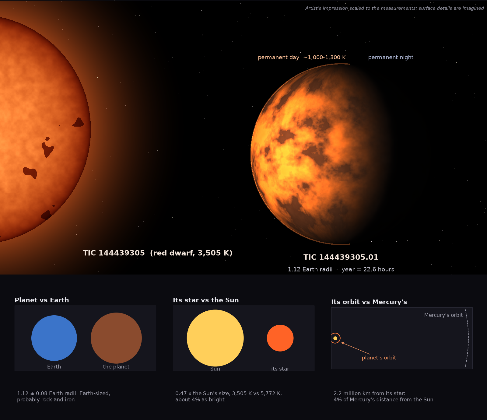
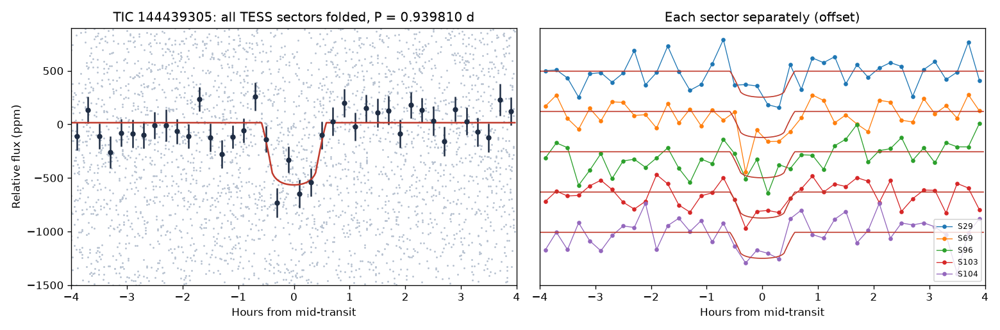

TIC 144439305.01: an Earth-sized world with a 22.6-hour year
A rocky-sized planet candidate orbiting a red dwarf about 200 light-years away, found in public NASA TESS data by Rajmeet Chandok (November 2026), with the search and vetting carried out using Claude (Anthropic).

What was seen
Every 22.6 hours, the star TIC 144439305 dims by about 0.05% for about an hour. NASA's TESS satellite recorded this in every observing period that covered the star, from 2020 to 2026: more than 150 transits. The size of the dip, combined with the star's size, gives a planet 1.12 times the size of Earth.

Why we think it's real
- It was predicted before it was looked at. TESS observed the star again in June–July 2026
(sectors 105–106), but no light curves had been made from those images. The expected transit times and depth were
frozen and fingerprinted (SHA-256
7c9ad782…8bed688) before the images were opened. The dips appeared on schedule at the predicted depth: 473 ± 74 ppm, a 6.4σ detection; none of 40 checks at wrong times came close. - It's in every year of data, at a consistent depth, with matching odd and even transits and no sign of a second eclipse.
- It shows up in independent processing: our own photometry from the raw images (7.7σ) and the separate TESS-SPOC pipeline (6.3σ) both find it.
- It's on the right star. Fitting the images with TESS's real point-spread function puts the source on the target; every neighbouring star that could fake it is ruled out.
- The odds of a false alarm are low. TRICERATOPS, with Gaia limits on hidden companions, gives a false-positive probability of 0.9%.
What isn't known yet
| Question | Status | What would settle it |
|---|---|---|
| Is it a planet (formally)? | "Likely planet" | High-resolution imaging to rule out an unresolved companion star |
| What is it made of? | Unknown | A mass from precise radial velocities (~1–2 m/s signal) |
| Does it have an atmosphere? | Unknown; probably not | JWST thermal measurements of the dayside |
| Has anyone reported it before? | Not as of 2026-11-20 | Not a TOI or CTOI; no papers in SIMBAD; not in public search catalogues |
The star
TIC 144439305 (Gaia DR3 6532568669359184000, 2MASS J23552819-4407251) is a red dwarf in the southern constellation Phoenix: about half the Sun's size and mass, 3,505 K, and about 4% as luminous. From the planet it would fill about 17° of the sky, 32 times wider than our Sun appears from Earth.
Data, code and credit
Everything needed to check or reproduce this result, including the full analysis, data products, the pre-registered prediction and the pipeline code, is in the GitHub repository. Predicted transit times through 2027: ephemeris.csv.
Cite as: Chandok, R. (2026), TIC 144439305.01: a 1.1 Earth-radius, 22.6-hour transiting planet candidate around a nearby M dwarf, Zenodo, doi:10.5281/zenodo.24405376.
This work uses data from NASA's TESS mission obtained from MAST (QLP, TESS-SPOC and TARS light curves; TESScut), ESA's Gaia mission, and the TESS Input Catalog, and the open-source tools lightkurve, wotan, batman, emcee, TRICERATOPS, MOLUSC and TESS_PRF.